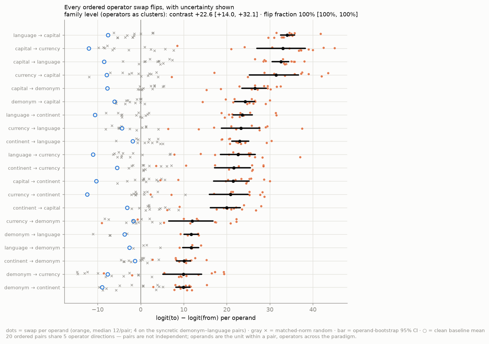
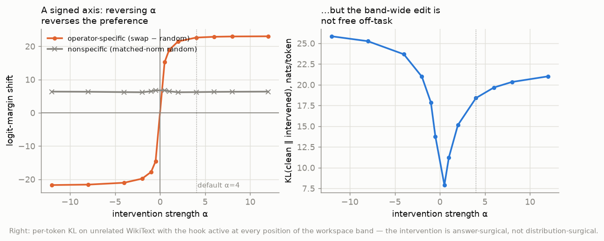

Evidence & controls
How to read this page. Every scientific claim can fail somewhere — the honest question is where was this one allowed to fail, and did it? Each row below puts a claim next to the experiment that tests it, the control that could have killed it, and the artifact that regenerates it. If you read only one page beyond the simple explanation, read this one.
Artifact paths in the last column refer to files in the
code repository — every number regenerates from
scripts/ there.
Statistical treatment throughout: cluster-bootstrap 95% CIs at two levels (operands within a pair; operators as top-level clusters — the 20 ordered pairs share 5 directions and are not independent observations). Full details in the paper.
Claim → experiment → control → artifact
| # | Claim | Experiment | Control / would-have-killed-it | Artifact |
|---|---|---|---|---|
| 1 | The operator is a manipulable direction | all-pairs swap v(to)−v(from), 20 ordered pairs |
matched-norm random direction ≈ 0 (nonspecific shift +6, flat in dose) | results/ablation/{model}_relations_operator_swap*.parquet |
| 2 | Effects are not noise | operand-bootstrap CIs per pair; dyadic operator bootstrap for the family | no per-pair CI crosses zero; family flip fraction 1.00 [1.00, 1.00] | *_long.parquet + op_core.bootstrap_* |
| 3 | The representation factorizes (operand ⊕ operator) | two-way ANOVA of H[operand, operator] |
reading-position control: operand-dominant at the entity token → operator-dominant at the query token (not template echo) | results/geometry/{model}_relations.json |
| 4 | The operator generalizes | build v(op) on half the operands, swap the held-out half |
interpolation would fail here; random ≈ 0 | {model}_relations_heldout*.parquet |
| 5 | It is not the prompt frame | build on frame i, swap on frame j (3 context frames) | clean baselines shift across frames; the contrast doesn't (1.7B 180/180, 8B 100/100) | {model}_relations_templates*.parquet |
| 5b | It is not the wording either | full re-lexicalization ("currency of" → "money used in", …), transfer both ways | 40/40 at 1.7B and 8B; transfer contrast ≈ within-formulation (+22.59 vs +22.62) | {model}_relations_lexical*.parquet |
| 6 | It is not one architecture | identical pipeline on Gemma-2-9B | different corpus/tokenizer/softcap — strongest effects of the three models | gemma-2-9b_relations_* |
| 7 | Operation ≠ realization | language vs demonym (both emit "Italian"); exponent-free desinence | the shared output word cancels in the desinence, yet it still installs the relation (clean −3.6/−2.9/−3.0 → +12.5/+8.1/+8.5 across the three models) | results/geometry/*.json (cosines, desinence) |
| 8 | Factorization is domain-specific | same pipeline on arithmetic (+ × −) and comparison logic | held-out generalization fails (≤ random); 2–4× interaction — a negative that validates the method's discriminative power | {model}_{arithmetic,logic}_* |
| 8b | It is not one domain either | full pipeline on a curated animal-taxonomy domain (class/habitat/diet/covering × 12) | 12/12 swaps (+18.1), held-out 12/12 (+18.0 ≡ within), frames 72/72, permuted-label null → 0 (−0.5); interaction 22% ≈ arithmetic's 23% yet transfer perfect → the domain discriminator is transfer, not fusion share | {model}_animals_* |
| 9 | The add-N literature reconciles | add-N (operator = addend) vs + × − (operator = function) | add-N generalizes better and is the most collinear (76% one line) — a linear numeric family, not distinct operations | *_arith_addN_*, operator_collinearity.py |
| 10 | Intervention effects are dose-sane | α sweep 0.5–12 | specific effect saturates at default α=4; off-task KL reported honestly (18 nats — answer-surgical, not distribution-surgical) | 1.7b_relations_dose.parquet |
| 10b | The band is not doing the work | same directions at a single layer; real-activation patch at one position; greedy exact-match | single layer: 20/20 margins at 4.4× lower KL; patch reroutes the generated answer at 51% vs 53% ceiling (additive at the default α=4: margins only — resolved as an overdose artifact in row 10d) | 1.7b_relations_minimal*.{parquet,json} |
| 10c | The factorization is behaviorally sufficient — a state composed from its parts generates | patch μ+stem+case (donor decomposition ladder, 8 variants) at the query position |
composed state says the target at 51.8% ≈ real donor 50.9% ≈ clean ceiling 53%; leave-one-cell-out parts still 35.7%; stem-swap redirects the answer to the swapped operand (34.4% vs 1.8%); interaction term alone 7.1%; magnitude control 4.5% | {model}_relations_patch_decomp*.{parquet,json} |
| 10d | Steering generates at the calibrated dose — the old ≤0.5% exact match was an overdose | dose × position sweep on generation + out-of-sample calibration (α* frozen on half the operands, evaluated on the rest, 5 partitions) | inverted-U at the predicted on-manifold dose (band α≈0.1 → 51.3%, single layer α≈1 → 38.4%); α identical in all 5 partitions and eval-optimal in 10/10 — a transferable dose, not a post-hoc pick (frozen-α eval 60.8% / 42.2%) | {model}_relations_posdose.parquet, 1.7b_relations_dose_oos.* |
| 10e | The effect is a localized edit, not a global perturbation | additive injection restricted by position (all / query / operand / sentence-initial) × layer scope | query-token-only ≈ all-positions on the margin (+28.7 vs +28.9) at 60× lower off-task KL (0.29 vs 18.4 nats); operand/wrong positions ≈ 0 | {model}_relations_positions*.{parquet,json} |
| 10f | The margin effect is label-specific | permuted-relation-label directions (per-operand + global, 20 redraws); random inside the operator subspace | all three semantic nulls → 0 (+0.7 / +0.6 / +0.75, CIs span zero) vs real +22.6; structural probes (wrong layer, other relation, shuffled answers) stay nonzero for mechanistically explained reasons | {model}_relations_nulls*.{parquet,json} |
| 10g | Represented early, causal late | per-layer sweep: ANOVA share + single-layer swap, direction built and injected at each layer | decodability at ceiling everywhere (locates nothing); operator share peaks at 19% depth, causal contrast at 89% — a 70-point dissociation | {model}_relations_layersweep*.{parquet,json} |
| 10h | The metrics survive their own audit | k=8 generations classified 5 ways (raw texts persisted); forced choice by sequence log-prob among gold answers | overdose = 94.6% token loops by inspection (not missed variants); calibrated dose = fluent target at the clean rate (59.4% vs 58.5%); target wins forced choice at 80% even at the overdose — fluency dies, information doesn't; containment over-count bounded ≤5 points | 1.7b_relations_audit.{parquet,json} |
| 10i | Composition claims are paired, not eyeballed | per-cell paired differences under the hierarchical bootstrap; TOST at pre-specified ±5pp | composed−donor +0.9pp [−6.9,+8.3] (8B −3.1 [−12.5,+5.2]); interaction adds −0.9pp [−8.3,+6.9]; formal equivalence underpowered with 5 operator clusters — stated, not hidden; held-out-cell −15pp below donor (CI excludes 0 at 8B) reported as a real gap | {model}_relations_equivalence.json |
| 10j | Not one lucky split or operator | 5 shuffled held-out partitions + LOO-country + LOO-operator | every pair flips in every partition ([+20.0,+22.9]); LOO-country 220/224 ([+11.5,+28.1]); dropping any operator keeps flips 1.00 ([+18.8,+25.8] / [+23.3,+28.9]) | {model}_relations_heldout_parts*, *_equivalence.json |
| 11 | No privileged readable subspace | 4 readout comparisons (pass@k, form, number probe, concept plane) | spectrum-matched random projection reads as well as the fitted J-lens; random-plane baseline kills the "channel" | working log, Part 1 |
The distribution behind the headline

Orange = per-operand swap values (12/pair); gray × = matched-norm random; black bar = operand-bootstrap 95% CI; ○ = clean baseline. The weakest pairs are exactly the syncretic ones (demonym ↔ language) — where two operations share their surface form, as the declension reading predicts.
Dose–response

The operator-specific effect (swap − random) saturates at the default dose; the matched-norm random control's +6 nonspecific shift is why every headline number is a contrast. The band-wide edit is not free off-task (right panel) — reported, not hidden.
Cross-domain gradient
| domain | operator variance | interaction | held-out | verdict |
|---|---|---|---|---|
| relational | 82–86% | 7–13% | 20/20 flip | clean operator |
| arithmetic | 42–55% | 23–25% | ≤ random | bag of heuristics |
| comparison logic | 25–33% | 34–45% | ≤ random | entangled |
Monotone at both Qwen3 scales; the held-out test is what separates a real operator from memorized interpolation.
Full evidence trail, including the deliberate nulls: working log. Reproduce any cell: How to reproduce.